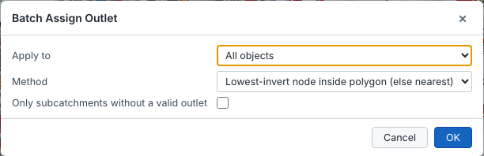
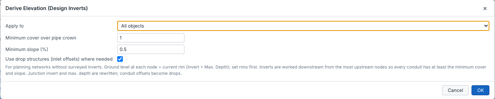
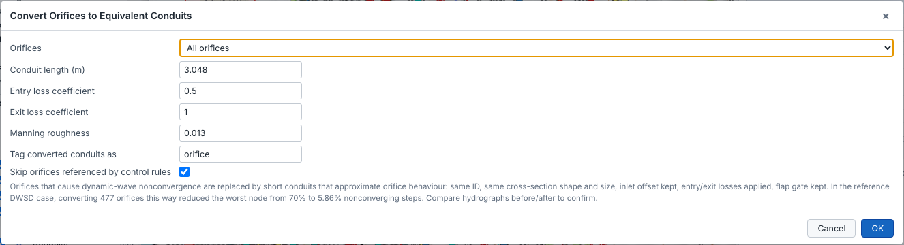
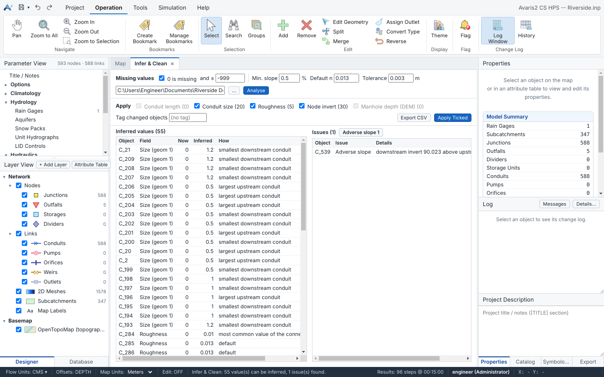
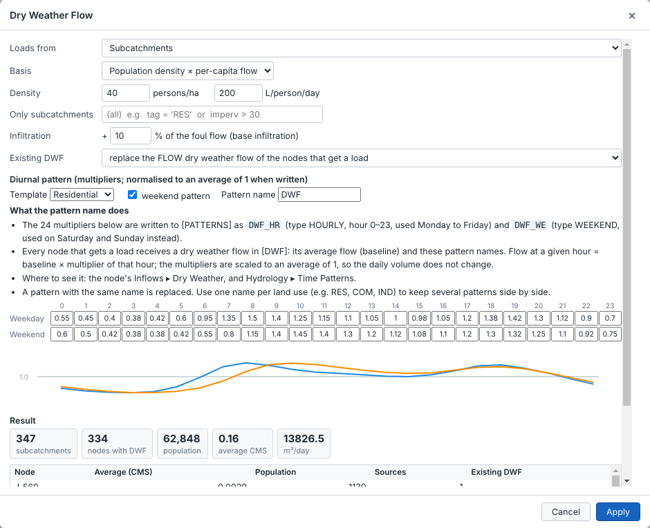
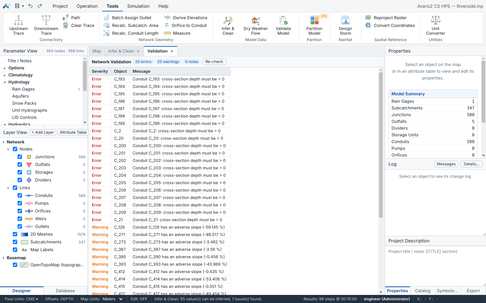

After a trace, open Groups ▸ Create Group… to save the traced catchment, or open the attribute table with Selected only ticked to review it.
Assigns the outlet node of many subcatchments at once. Each subcatchment drains to the node with the lowest invert inside its polygon, or to the nearest node if there is none inside. You can apply it to all or only the selected subcatchments, and limit it to subcatchments without a valid outlet.

These tools recompute the areas from the polygons and the lengths from the drawn lines, in map units. Set Map Units in the status bar first. For conduits you can set a minimum length.
Designs invert elevations for a tree-shaped (dendritic) network from the rim levels:
Max. depths and conduit offsets are updated to match. A network that contains a loop is rejected.

In dynamic-wave models, orifices are a frequent cause of non-convergence. This tool replaces them with short equivalent conduits that behave like orifices:
Orifices used by control rules can be skipped, and the new conduits are tagged so you can find them.

Click points on the map to measure a distance in map units. Double-click to finish.
Models built from GIS or asset records often have gaps: pipes without a diameter, manholes without an invert, zero lengths. Tools ▸ Model Data ▸ Infer & Clean finds the missing values, proposes a value for each one from its neighbours, and lists data errors. Nothing is changed until you click Apply Ticked, and the whole change is one undo step.

| Setting | Meaning |
|---|---|
| 0 is missing / and ≤ | Which values count as missing. With 0 is missing ticked, a zero counts as missing. Values at or below the second number (for example -999, a common “no data” code) also count as missing. An empty field is always missing. |
| Min. slope (%) | Used when an invert is known on one side only: the invert is extended from the known end at this slope. |
| Default n | Manning's n used when no connected conduit has a roughness. |
| Tolerance | Tolerance of the checks, in model length units (for example how far a downstream invert may be above the upstream one before it is reported as an adverse slope). |
| DEM (optional) | A ground model (GeoTIFF or ASCII grid). With a DEM, node inverts are inferred as ground − manhole depth, which is much more accurate than interpolation, and missing manhole depths can be filled in. Click … to choose the file. |
| Tag changed objects | Optional. A tag (for example INFERRED) that is written to every object that gets an inferred value, so you can find, theme or review them later. |
| Value | Rule |
|---|---|
| Conduit length | Length of the conduit as drawn on the map (in map units; set Map Units in the status bar first). |
| Conduit size (geom 1) | The largest upstream conduit; if there is none, the smallest downstream conduit. Repeated along chains, so a run of several pipes without size fills from its known ends. Irregular, street and dummy sections are skipped. |
| Roughness | The most common value of the connected conduits, otherwise Default n. |
| Node invert | With a DEM: ground − manhole depth. Without: interpolated by pipe length between the nearest known inverts upstream and downstream. If only one side is known, extended at Min. slope. |
| Manhole depth (DEM) | DEM ground − invert, only where the depth is missing. |
The issues are reported only; they are not changed automatically, because the right fix depends on the cause. The buttons next to the Issues title select all objects of one kind at once, so you can review them in the attribute table or theme them.
| Issue | Meaning |
|---|---|
| Adverse slope | The downstream invert is higher than the upstream invert (by more than the tolerance). |
| Duplicate conduit | Two conduits connect the same pair of nodes. |
| Orphan node | A node that is not connected to any link. |
| Crown above rim / Invert above ground | The pipe crown is above the manhole rim, or the invert is above the ground. |
| No outfall | A part of the network that does not drain to an outfall or a storage unit. |
| Subcatchment outlet | A subcatchment whose outlet does not exist. |
| Missing invert / size / Zero length | A missing value that could not be inferred (no known neighbour). |
Inferred values are estimates. Use them to get a model running and to find gaps, then confirm the important ones (trunk sewers, outfalls, structures) against survey or record drawings.
Tools ▸ Model Data ▸ Dry Weather Flow generates the foul (sanitary) flow of the nodes from population or area loads, adds base infiltration, and writes a diurnal pattern. The result goes into the node's dry weather inflow and the time patterns, in one undoable step.

| Loads from | How the flow is calculated | Node that receives it |
|---|---|---|
| Subcatchments | Basis: population density × per-capita flow (persons/ha × L/person/day, or the US equivalents), or area × unit flow (flow per hectare or acre). | The outlet node of the subcatchment. If the outlet is another subcatchment, it is followed until a node is reached. |
| GIS layer (points / polygons) | A numeric attribute of the layer, read as population, households (× persons per household) or a flow directly. | The outlet of the subcatchment that contains the feature, otherwise the nearest junction; or always the nearest junction. |
tag = 'RES' or imperv > 30 (see Expression language). Empty = all.<name>_HR (hourly, used Monday to Friday) and <name>_WE (weekend). The multipliers are scaled to an average of 1, so the daily volume equals the average flow × 24 h. A pattern with the same name is replaced.The Result section at the bottom updates as you change the settings: subcatchments used, nodes that get dry weather flow, population, average flow and daily volume, and a table per node. Click Apply to write it.
Each node has one dry weather flow pattern. To give residential, commercial and industrial areas their own flow rates:
RES, COM, IND (attribute table or Properties).tag = 'RES', the residential rates and template, pattern name RES, Existing DWF = replace.tag = 'COM', the commercial rates and template, pattern name COM, Existing DWF = add.Tools ▸ Model Data ▸ Validate Model checks the model and lists the problems in a Validation view. The counts of errors, warnings and notes are shown at the top.

Click a row to select the object and zoom to it, and click Re-check after fixing problems. Errors stop a simulation; the quick checks also run automatically before each run. For missing values and more data checks, use Infer & Clean.